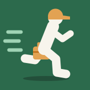

Add Stop Log to your home screen
One-time setup. After this, the icon opens your app directly.
- Tap the Share button at the bottom of Safari.
- Scroll down and tap Add to Home Screen, then Add.
- Come back here and tap I've added it.

One-time setup. After this, the icon opens your app directly.